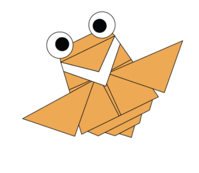

How to Make an origami Camel
How to Make an origami Camel
This origami piece has a total of 19 simple steps. Once completed your result will be like the picture above.
Interesting Facts About Camels
Did you know camels have 3 eyelids and 2 rows of eyelashes? This helps them keep sand out of their eyes.
The hump on a camel's back does not actually store water as many believe. It stores fat.
The word camel comes from the Arabic word beauty.
 How to Make an origami Chameleon
How to Make an origami Chameleon
This origami has a total of 12 steps and after completing them you have your own origami chameleon.
Interesting Facts Anout Chameleon
Did you know chameleon meant "ground lion"?
Most Chameleons can change color.
How to Make an origami Flying Cicada
This origami has a total of 10 steps.
Interesting Facts About Flying Cicadas
They may have red-orange colored eyes.